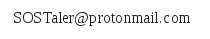

A Mobile Virtual Currency System to Support Cash Programming
Works with all SMS/text capable phones.
Built upon reliable blockchain technology.
Uses a flexible virtual currency pegged to the Euro.
Free from “Know-Your-Customer” financial authority regulations.
Respects the privacy of your beneficiaries.
Contact us at:

Download Factsheet